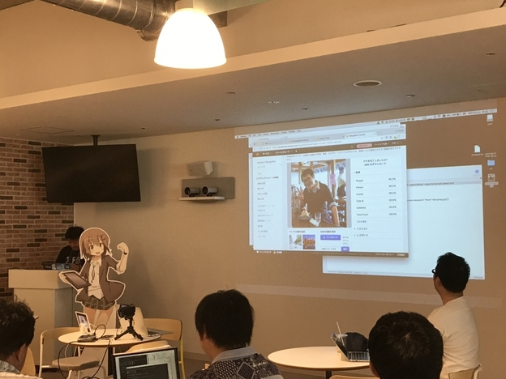
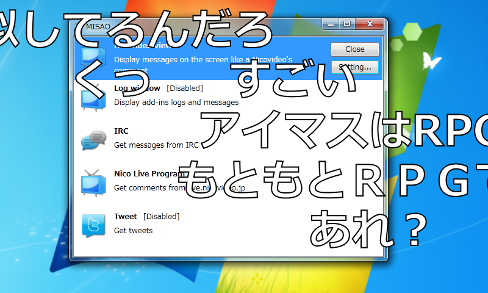

告知：今年もやります！ 2018/06/16 プログラミング生放送勉強会＠サイボウズ株式会社 松山オフィス
執筆日時：

今年もやるっぽいので、よろしくお願いします！（52回でいいのかな？ 間違ってたらごめん！）
とりあえずスピーカーがまったくきまってないので、誰かお願いします……最悪、だるやなぎトークがんばるしかない……orz
プロ生って何？
たぶんニコニコ生放送発祥の IT 勉強会コミュニティです。IT に関することならジャンルを問わず、みんなで持ち寄って発表をしています。今ハマってる面白いこと、お仕事でこんなことやってる、俺はこんな失敗をした、こんなことやってみました……だいたいなんでもオッケーなはず。
勉強会の内容は、たぶんオンライン配信されます。視聴者のコメントは「MISAO 」でニコニコ動画風にプレゼンに表示されることも多いです。たまにマサカリも飛んできますけど、キニシナイ。

https://archive.codeplex.com/?p=misao
愛媛では毎年6月にやるのが半ば恒例です。今年がうまくいけば、来年もまた開催できると思うので、是非ともよろしくお願いします。昨年の様子を知りたい方は、https://atnd.org/events/96211 に参加体験記のリンクを張っていますので、参考にしてください。
スピーカーがしたいんだけど
Twitte/@daruyanagi やこのブログのコメント、なんでもいいのでコンタクトをいただければ。顔出しは困るという方も相談に乗ります（基本的に配信されるのはスライドだけかな？
ライトニングトーク（LT）や準備のお手伝いをしたいという方も歓迎です。例年、県外から来てくれる方も多いのですが、できたら県内の学生とかに頑張ってほしいかなーって、おじさんは思っています。
参加費は？
不要です。家におやつが余ってれば、一品持ってきてくださるとみんなが喜びます。
懇親会は、去年4,000円でした。今年も同じところに仕様かなって思ってるので、同じ額になる予定です。ちなみに、学生の方は申し出ていただければ半額になります。タダじゃなくてごめんね。